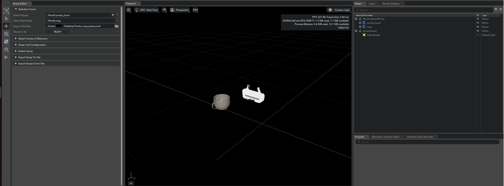
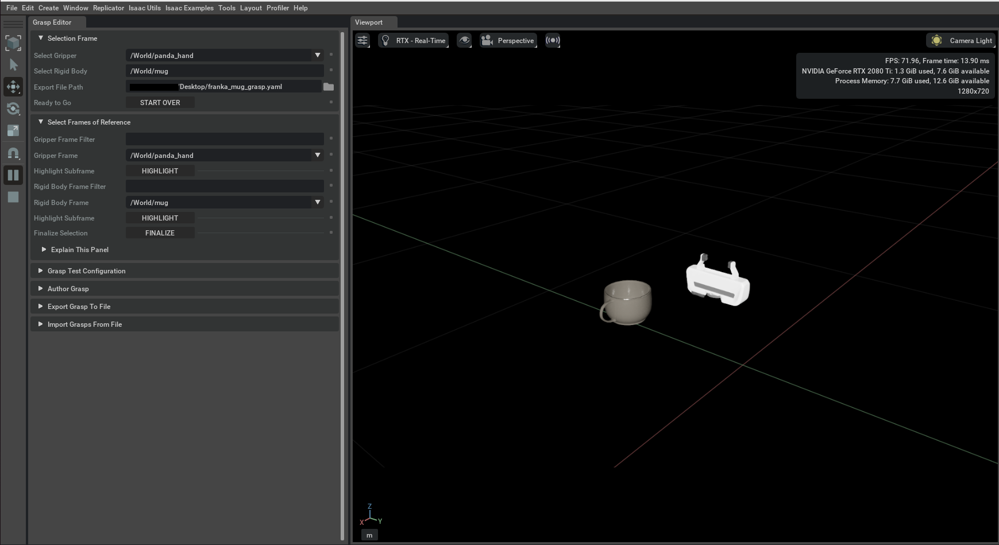
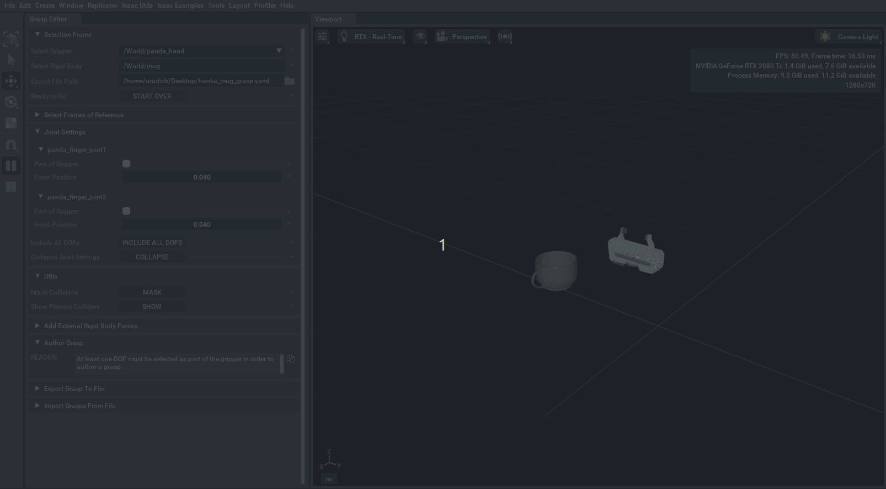
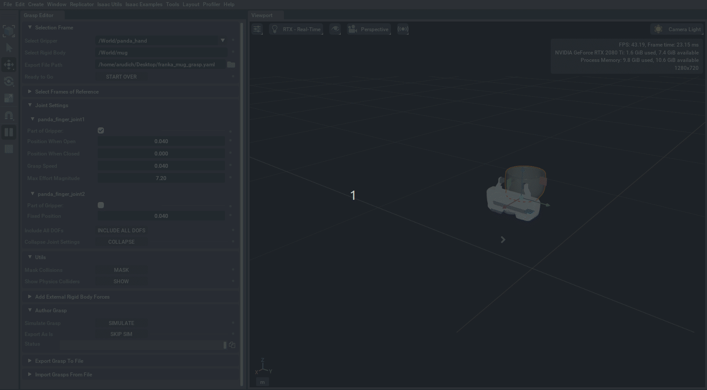
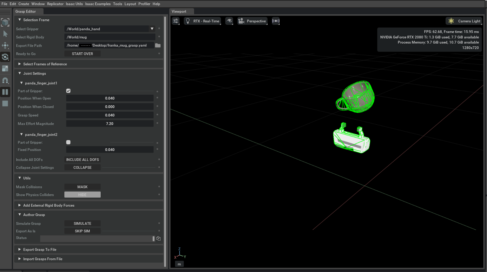
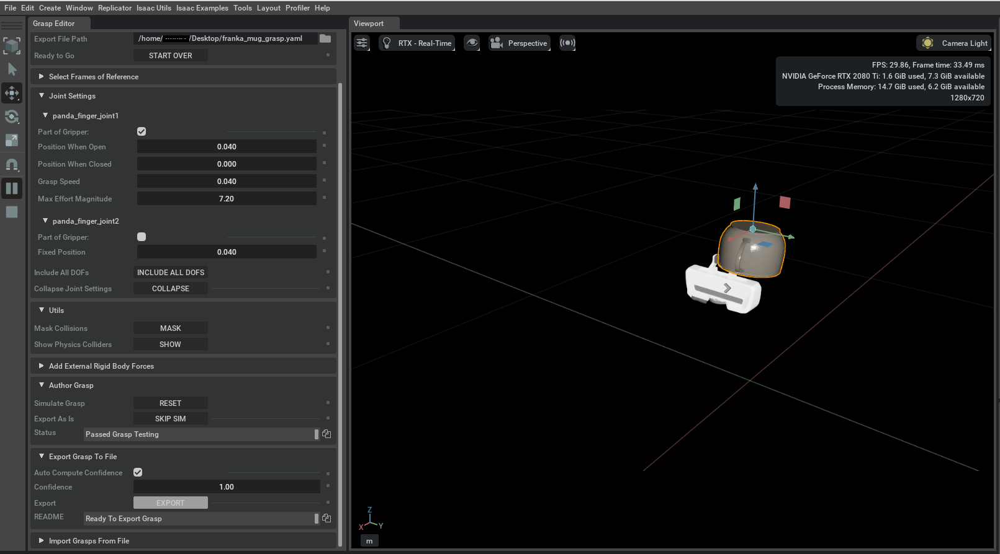
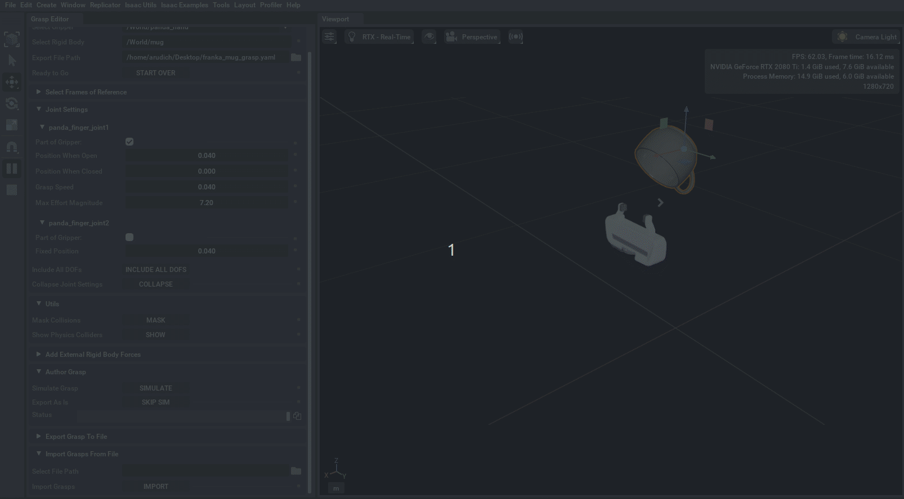

Grasp Editor#
Learning Objectives#
This tutorial explains how to use the Grasp Editor extension in NVIDIA Isaac Sim to hand-author and simulate grasps for a specific gripper/object pair. These grasps are stored in an isaac_grasp YAML file that can be imported and used with a motion generation algorithm to move the gripper into place and grasp the desired object.
Getting Started#
To get started using the Grasp Editor extension, you need to prepare your assets in NVIDIA Isaac Sim.
You must have an Articulation capable of grasping. This can be a floating gripper, or it can be a gripper attached to an arm.
You must have a USD version of the object you want to grasp.
For both the gripper and the object, you must be ready to identify the USD frame that should be used to represent location. This is often the frame in the center of the object mesh and at the base of the gripper.
You can download the stage used in this tutorial
here
and follow along.
After downloading, extract the archive. In your running NVIDIA Isaac Sim instance,
click File > Open and select the grasp_editor_tutorial.usd file.
What is an Isaac Grasp File?#
The output of the Grasp Editor extension is a YAML in the isaac_grasp file format. A single isaac_grasp file stores a list of grasps for a specific gripper/object pair. The file follows a simple format:
1format: isaac_grasp
2format_version: 1.0
3
4object_frame: /World/mug
5gripper_frame: /World/panda_hand
6
7grasps:
8 grasp_0:
9 confidence: 1.0
10 position: [-0.04346, 0.06759, 0.19895]
11 orientation: {w: 0.00332, xyz: [0.98453, 0.16837, 0.04837]}
12 cspace_position:
13 panda_finger_joint1: 0.00943
14 pregrasp_cspace_position:
15 panda_finger_joint1: 0.04
isaac_grasp files do not need to originate with the Grasp Editor extension. The Grasp Editor extension is useful for both authoring isaac_grasp files and importing grasps that were authored elsewhere for visualization and validation.
A grasp is defined by the relative position of the gripper and object. In order for this relative position to have meaning, a representative frame must be chosen for the gripper and object positions. The Grasp Editor handles these frames in two distinct ways:
On export, the USD paths of the representative frames are written to the isaac_grasp file under the object_frame and gripper_frame fields.
On import, the object_frame and gripper_frame fields are ignored, because isaac_grasp files may be authored externally (possibly without going through USD at all).
As a result, identifying the correct USD frames is the user’s responsibility when using the Grasp Editor for importing.
Each grasp in an isaac_grasp file has a unique name (e.g. grasp_0). The fields for a named grasp are:
confidence: A parameter describing the quality of a grasp.
position: The translation of the gripper frame relative to the object frame.
orientation: The orientation of the gripper frame relative to the object frame.
cspace_position: A dictionary of joint positions for every joint that is used to control the gripper. These joint positions are the state of the gripper as it is actively grasping the object.
pregrasp_cspace_position: A dictionary of joint positions for every joint that is used to control the gripper. These joint positions represent the open position of the gripper.
All together, a grasp may be applied in practice by moving the gripper to the correct relative position and orientation while in the pregrasp_cspace_position, then closing the gripper until the joints are in cspace_position. If the object’s position and orientation in the world frame of reference is given by \(T_o, R_o\), with the position and orientation fields specifying relative transformation \(^oT_g, ^o\!\!R_g\) (i.e. the translation and rotation of the gripper according to the object frame of reference), the desired position of the gripper in the world frame \(T_g , R_g\) is given by:
Using the Grasp Editor#
Selection Frame#
The Grasp Editor is a UI-based extension that can be used to author and import isaac_grasp files. In NVIDIA Isaac Sim, the Grasp Editor can be found in the toolbar under Tools > Robotics > Grasp Editor. The first step is to add an Articulation and an object to the stage. The Articulation may be an isolated gripper, or it may be a gripper attached to a robot arm. The object can be any non-Articulation that has an associated mesh.
{kind=link}

To fill in the Selection Frame:
Select the Articulation and object of interest. The prim path for the object can be copied by right clicking on the desired prim and selecting “Copy Prim Path”.
Choose an export path for the isaac_grasp file. This should end in ‘.yaml’.
A few rules apply to the export file:
The Grasp Editor may be used to author a sequence of grasps to the selected export file, but it does not support modifying an existing file.
If an export path is supplied that already exists, the existing file will be overwritten with a new isaac_grasp file.
This tutorial will author grasps between the Panda hand gripper (isolated from the Franka Emika Panda robot) and a mug. When “Ready” is clicked, the Grasp Editor will:
Validate each field in the panel.
Perform all necessary conversions of the selected object prim (the mug) to make it graspable. Specifically, it applies the Rigid Body and Collision APIs from Usd Physics so that the object has a collision geometry and can be moved by external forces.
Note
The Grasp Editor does not revert these changes to the object asset, and so it is best not to save the USD stage unless these changes are specifically desired.
Warning
There is a known issue that the mug may “disappear”, this is a visual bug. You can press “STOP”, then “PLAY” again to make it reappear.
Select Frames of Reference#
In this panel, you may select the frames of reference that should be used to describe the position in space of the gripper and object. It is critical to understand this panel and to make the proper selections before moving on.
Most motion generation algorithms do not natively consume USD files. It is common for motion generation algorithms to reference a URDF file. If the Grasp Editor uses a frame that is not defined in a corresponding URDF file, an authored grasp becomes meaningless from the perspective of any such motion generation algorithms.
Similarly, the selected frame of reference for the object must correspond to the existing pipeline in which the object is being manipulated. For example, if a camera is being used to identify object pose, there is an implicit frame of reference for the object associated with that vision system. In this case, the selected frame for the object must correspond to this implicit frame of reference. If there is not already a frame in the USD that represents the correct frame of reference, a new one should be authored on the stage under the selected object path (e.g. nested under “/World/mug”).
In this tutorial, the base frames for the gripper and object are used. If the entire Franka Panda robot were being used, the correct frame of reference for the gripper would still be the panda_hand frame. Once “Finalize” is clicked, these frames of reference become global to the output isaac_grasp file and cannot be changed.
The Grasp Editor will write the USD paths for the frames of reference to the output isaac_grasp file, but this information will not be interpretable by a motion generation algorithm that does not consume USD.
{kind=link}

Joint Settings#
In this menu, you must select which joints in the Articulation are active degrees of freedom (DOFs) in the gripper. The Panda hand is a two finger gripper, but one of the joints is a mimic joint. Observe in the figure below that changing the value of panda_finger_joint1 causes panda_finger_joint_2 to move at the same time. This means that the Panda hand gripper is effectively controlled by a single DOF.
{kind=link}

Each active DOF in the gripper should be checked as “Part of Gripper”. This will open a new menu of joint settings that define how the grasp will be simulated and what gets written to the output isaac_grasp file.
Position When Open: The position of DOF that is considered to be open. Each grasp will be simulated by moving from the open position towards the closed position.
Position When Closed: The position of the DOF that is considered to be fully closed.
Grasp Speed: The speed at which the DOF will move from the open position towards the closed position when simulating.
Max Effort Magnitude: The maximum force/torque (N or N*m) that this DOF will be able to apply on the object when simulating.
At least one DOF must be marked as part of the Gripper in order to author a grasp. Only active gripper DOFs will be written to the output isaac_grasp file.
Utils#
The Utils menu has two useful utility functions that assist in using the Grasp Editor.
The Mask Collision button will mask collisions between the gripper and object. This may be helpful when moving the object into place in order to test a grasp. Masked collisions are unmasked when a grasp is simulated. When importing a grasp, collisions are masked automatically.
{kind=link}

If the simulated grasp does not appear to have complete contact between the object and gripper, you can use the “Show Physics Colliders” button to visualize the collision geometry associated with your assets. It is outside of the scope of this extension to fix incorrect collider geometry, but the Grasp Editor does allow you to author grasps without simulating them. In this situation you can mask collisions and move things into place visually.
{kind=link}

{kind=link}
{kind=link}
Exporting Grasps#
The export frame becomes available once a grasp has been fully simulated, or the option to simulate has been declined. On clicking “Export”, the current state of the stage is used to fill in the relevant fields of the isaac_grasp file.
The confidence field takes on the value of the “Confidence” field in the Export panel.
The position and orientation fields for the grasp are determined by finding the relative position of the gripper in the object’s frame of reference. This uses the frames defined in Select Frames of Reference.
The cspace_position field is determined based on the current positions of the DOFs that have been marked as part of the gripper.
The pregrasp_cspace_position field is taken from the “Position When Open” field of Joint Settings for each DOF that has been marked as part of the gripper.
At this stage, multiple grasps may be authored in a row and sequentially exported to the same isaac_grasp file.
{kind=link}

Importing Grasps#
Apart from authoring grasps, the Grasp Editor may be used to validate grasps that were authored elsewhere. This can be done in the Import panel by selecting an isaac_grasp file and clicking Import. This tutorial uses the same file that is used for export, but this does not need to be the case.
In the figure below, multiple grasps have been authored and written to file using the Grasp Editor. These grasps are imported, and can now be quickly visualized and simulated in sequence.
{kind=link}

{kind=link}